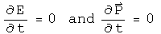
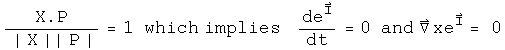

Deriving A Quaternion Analog to the Schrödinger Equation
The Schrödinger equation gives the kinetic energy plus the potential (a sum also known as the Hamiltonian H) of the wave function psi, which contains all the dynamical information about a system. Psi is a scalar function with complex values.

For the time-independent case, energy is written at the operator -i hbar d/dt, and kinetic energy as the square of the momentum operator, i hbar Del, over 2m. Given the potential V(0, X) and suitable boundary conditions, solving this differential equation generates a wave function psi which contains all the properties of the system.
In this section, the quaternion analog to the Schrödinger equation will be derived from first principles. What is interesting are the constraint that are required for the quaternion analog. For example, there is a factor which might serve to damp runaway terms.
The Quaternion Wave Function
The derivation starts from a curious place :-) Write out classical angular momentum with quaternions.
What makes this "classical" are the zeroes in the scalars. Make these into complete quaternions by bringing in time to go along with the space 3-vector R, and E with the 3-vector P.
Define a dimensionless quaternion psi that is this product over h bar.

The scalar part of psi is also seen in plane wave solutions of quantum mechanics. The complicated 3-vector is a new animal, but notice it is composed of all the parts seen in the scalar, just different permutations that evaluate to 3-vectors. One might argue that for completeness, all combinations of E, t, R and P should be involved in psi, as is the case here.
Any quaternion can be expressed in polar form:
Express psi in polar form. To make things simpler, assume that psi is normalized, so |psi| = 1. The 3-vector of psi is quite complicated, so define one symbol to capture it:
Now rewrite psi in polar form with these simplifications:
This is what I call the quaternion wave function. Unlike previous work with quaternionic quantum mechanics (see S. Adler's book "Quaternionic Quantum Mechanics"), I see no need to define a vector space with right-hand operator multiplication. As was shown in the section on bracket notation, the Euclidean product of psi (psi* psi) will have all the properties required to form a Hilbert space. The advantage of keeping both operators and the wave function as quaternions is that it will make sense to form an interacting field directly using a product such as psi psi'. That will not be done here. Another advantage is that all the equations will necessarily be invertible.
Changes in the Quaternion Wave Function
We cannot derive the Schrödinger equation per se, since that involves Hermitian operators that acting on a complex vector space. Instead, the operators here will be anti-Hermitian quaternions acting on quaternions. Still it will look very similar, down to the last h bar :-) All that needs to be done is to study how the quaternion wave function psi changes. Make the following assumptions.
1. Energy and Momentum are conserved.

- Energy is evenly distributed in space
3. The system is isolated

4. The position 3-vector X is in the same direction as the momentum 3-vector P

The implications of this last assumption are not obvious but can be computed directly by taking the appropriate derivative. Here is a verbal explanation. If energy and momentum are conserved, they will not change in time. If the position 3-vector which does change is always in the same direction as the momentum 3-vector, then I will remain constant in time. Since I is in the direction of X, its curl will be zero.
This last constraint may initially appear too confining. Contrast this with the typical classical quantum mechanics. In that case, there is an imaginary factor i which contains no information about the system. It is a mathematical tool tossed in so that the equation has the correct properties. With quaternions, I is determined directly from E, t, P and X. It must be richer in information content. This particular constraint is a reflection of that.
Now take the time derivative of psi.
The denominator must be at least 1, and can be greater that that. It can serve as a damper, a good thing to tame runaway terms. Unfortunately, it also makes solving explicitly for energy impossible unless Et - P.X equals zero. Since the goal is to make a direct connection to the Schrödinger equation, make one final assumption:

There are several important cases when this will be true. In a vacuum, E and P are zero. If this is used to study photons, then t = |R| and E = |P|. If this number happens to be constant in time, then this equation will apply to the wave front.
Now with these 5 assumptions in hand, energy can be defined with an operator.


The equivalence of the energy E and this operator is called the first quantization.
Take the spatial derivative of psi using the under the same assumptions:
Square this operator.
The Hamiltonian equals the kinetic energy plus the potential energy.

Typographically, this looks very similar to the Schrödinger equation. Capital I is a normalized 3-vector, and a very complicated one at that if you review the assumptions that got us here. phi is not a vector, but is a quaternion. This give the equation more, not less, analytical power. With all of the constraints in place, I expect that this equation will behave exactly like the Schrödinger equation. As the constraints are removed, this proposal becomes richer. There is a damper to quench runaway terms. The 3-vector I becomes quite the nightmare to deal with, but it should be possible, given we are dealing with a division algebra.
Implications
Any attempt to shift the meaning of an equation as central to modern physics had first be able to regenerate all of its results. I believe that the quaternion analog to Schrödinger equation under the listed constraints will do the task. These is an immense amount of work needed to see as the constraints are relaxed, whether the quaternion differential equations will behave better. My sense at this time is that first quaternion analysis as discussed earlier must be made as mathematically solid as complex analysis. At that point, it will be worth pushing the envelope with this quaternion equation. If it stands on a foundation as robust as complex analysis, the profound problems seen in quantum field theory stand a chance of fading away into the background.